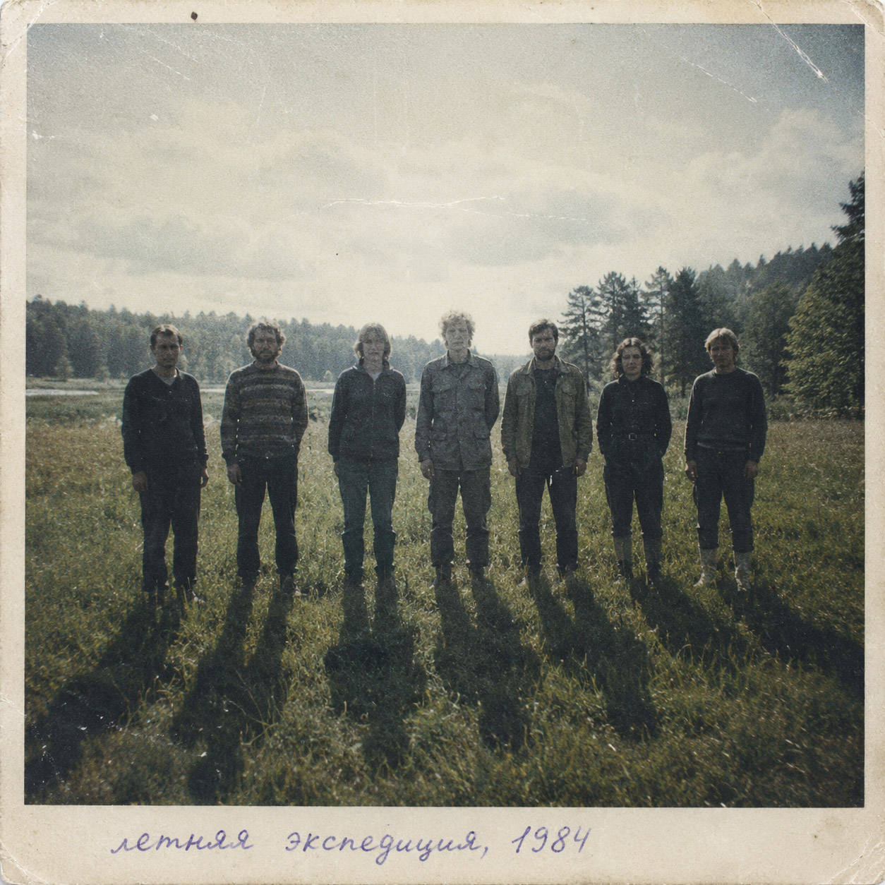

P · 03

Летняя экспедиция, 84
Ambient · Ethnic electronica
AVAILABLE / LISTEN
Ritual-84 — reconstructed field recordings from a summer expedition that never officially took place. Forest landscapes, ritual fragments, choral voices and early electronics preserve traces of a journey somewhere between folklore, memory and archival fiction.
LISTEN TO Ритуал-84 - Летняя экспедиция, 84
Also available through the RADIUS ARCHIVE distribution network on TikTok, Pandora, KKBOX, iMusica, iHeartRadio, Anghami, JioSaavn, AWA, Tencent Music, NetEase Cloud Music, Facebook Audio Library, Mixcloud, Boomplay, Snap, Peloton, Audiomack, JOOX, FLO, Tuned Global, YouTube Content ID and Facebook Rights Manager.
TRACKLIST
8 TRACKS
- 01 Круг
- 02 До рассвета
- 03 Купальский фрагмент
- 04 Солнцестояние
- 05 Ветер
- 06 Пепел
- 07 Тени
- 08 Купальський фрагмент (2026 Reconstruction)
Archival Recordings · 1984
8 Tracks